| اختيار | إظهار التفاصيل | السعر | العنوان | ISDN رمز الكتاب |
|---|---|---|---|---|
| ل.س 25000 | الف ليلة وليلة | 978-9770916738 | ||
|
الناشر: دار المعارف تصنيف الكتاب: قصص شعبية
ملخص: كتاب أسطوري يضم مجموعة من القصص الشعبية من الشرق الأوسط وجنوب أسيا وشمال إفريقيا
تم جمعها خلال العصر الذهبي للإسلام. يتم سرد القصص ضمن إطار قصة مركزية تتضمن الشخصية
الرئيسية، شهرزاد، التي تحكي حكايات للملك شهريار لتأجيل إعدامه
:أهم ثلاث قصص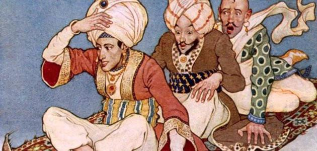 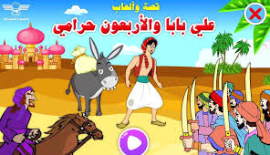
علاء الدين والمصباح السحري علي بابا والأربعون حرامي رحلات السندباد السبع
|
||||
| اختيار | إظهار التفاصيل | السعر | العنوان | ISDN رمز الكتاب |
| ل.س 12000 | موسم الهجرة إلى الشمال | 978-9953891718 | ||
|
الكاتب: الطبيب صالح الناشر: دار العودة - لبنان تصنيف الكتاب: رواية
ملخص: في هذه الرواية يزور مصطفى سعيد، وهو طالب عربي من أفريقيا يحصل على وظيفة كمحاضر في إحدى الجامعات البريطانية
ويتبنى قيم المجتمع البريطاني وهناك يتعرف إلى زوجته، جين موريس وهي امرأة بريطانية ترفض قبول إملاءات زوجها،بعد أعوام
يعودمصطفى إلى بلاده،حيث يلتقي هناك بصورة مفاجئة براوي القصةالذي عاش أيضًافي بريطانيا. القصة نفسها تروى عن طريق
قصص يرويها الراوي والبطل
:من أهم رواياته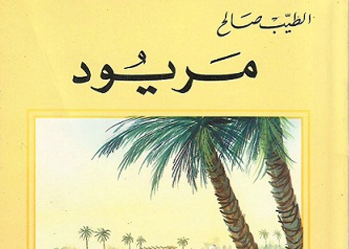 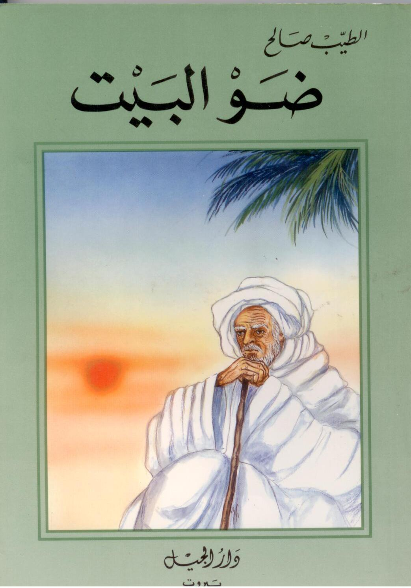 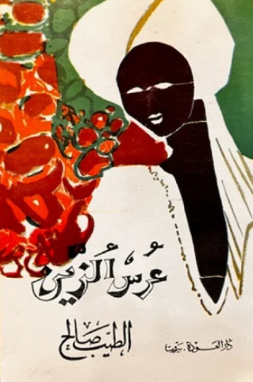
عرس الزين ضو البيت مريود
|
||||
| اختيار | إظهار التفاصيل | السعر | العنوان | ISDN رمز الكتاب |
| ل.س 10000 | الخبز الحافي | 978-9953451080 | ||
|
الكاتب: محمد شكري الناشر: دار الساقي للطباعة والنشر تصنيف الكتاب: رواية شطارية
ملخص: تبدأ القصة بتفاصيل مؤلمة عن معاناة شكري مع والده العنيف، حيث شهد الكاتب مقتل شقيقه الأصغر على يد والده،إضافة إلى المعاملة السيئة التي تعرضت
لها الأسرة بشكل عام، وفي هذه الظروف، كبر شكري في شوارع طنجة،محاولاً النجاة من الجوع والتشرد بالبحث عن أي وسيلة لإشباع حاجاته الأساسيه
.الرواية ليست مجرد سرد للمعاناة، بل هي استكشاف لعمق النفس البشرية في ظل الصعوبات
:من أهم رواياته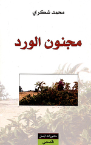 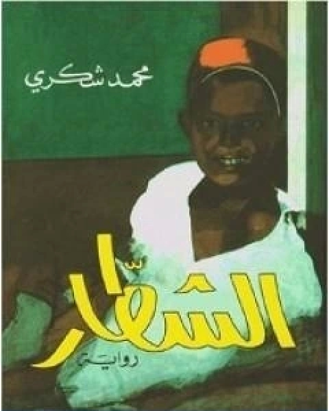
غواية الشحرور الأبيض الشطار مجنون الورد
|
||||
| اختيار | إظهار التفاصيل | السعر | العنوان | ISDN رمز الكتاب |
| ل.س 20000 | يوتوبيا | 978-9953691183 | ||
|
الكاتب:أحمد خالد توفيق الناشر: دار ميريت للنشر تصنيف الكتاب: رواية
ملخص: تدور أحداث الرواية في سنة 2023 حيث تحولت مصر إلى طبقتين، الأولى بالغة الثراء والرفاهية وهي (يوتوبيا) المدينةالمحاطة
بسور ويحرسها جنود المارينز التي تقع في الساحل الشمالي والثانية فقر مدقع وتعيش في عشوائيات ويتقاتلون من أجل الطعام
والرواية تحكي قصة شاب غني من يوتوبيا يريد أن يتسلى ويقوم بمغامرة لكسر ملل الحياة ورتابتها وهي صيد إنسان فقير من سكان
شبرا واللعب به مع أصحابه للحصول على متعة ثم قتله والاحتفاظ بجزء من جسده على سبيل الفخر وهي من الهوايات الجديدة للأغنياء
.الذين يعيشون في الساحل الشمالي تحديداً في يوتوبياالتي تشكل عالم الأغنياء
:من أهم رواياته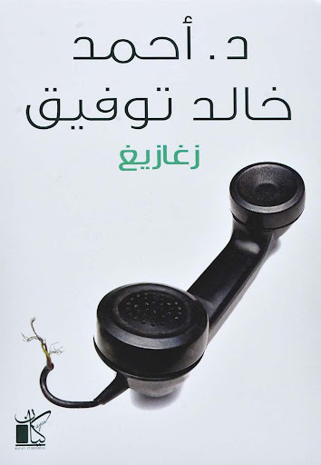 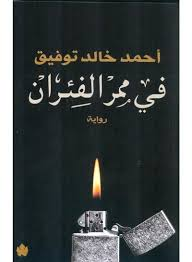 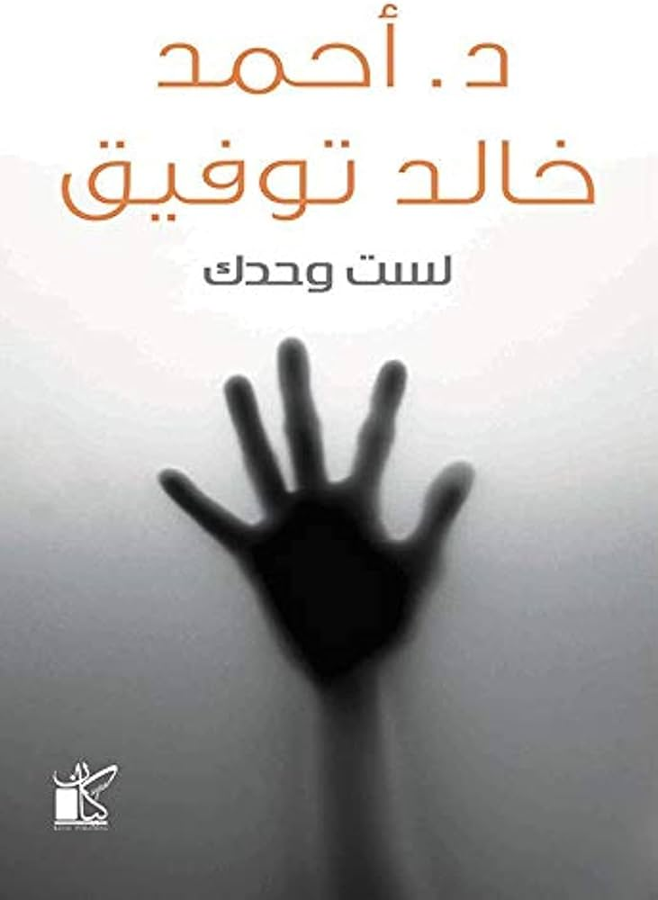
لست وحدك في ممر زغازيغ
|
||||
| اختيار | إظهار التفاصيل | السعر | العنوان | ISDN رمز الكتاب |
| ل.س 25000 | غداً | 978-9943690123 | ||
|
الكاتب: غيوم ميسو الناشر: المركز الثقافي العربي تصنيف الكتاب: رواية
ملخص: تعيش إيما في نيويورك، وهي فتاة في الثانية والثلاثين من عمرها، ما زالت تبحث عن رجل حياتها. يقيم ماتيو في بوسطن، فقدَ زوجته في حادث سير مروّع
وهو يربّي ابنته الصغيرة وحده. تعارفا عبر الإنترنت ورغبا في اللقاء، تواعدا في مطعمٍ في مانهاتن: ففي اليوم نفسه وفي الساعة نفسها، دفع كلّ منهما
من جهته باب المطعم، واقتيدا إلى الطاولة نفسها ومع ذلك سوف لن يلتقيا أبداً!أهي لعبة أكاذيب؟ أهو استيهام أحدهما؟ أم مراوغة من الآخر؟
سوف يدرك ماتيو وإيما سريعاً أنّهما ضحيتان لواقعٍ تجاوزهما وأن الأمر لا يتعلّق بمجرّد موعدٍ تمّ التخلّف عنه
:من أهم رواياته 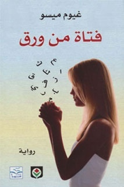 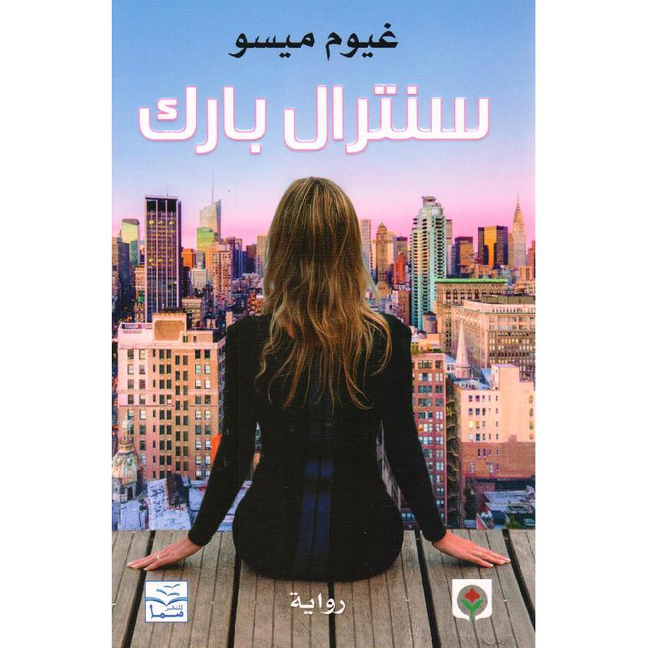
لأنني أحبك سنترال بارك فتاة من ورق
|
||||